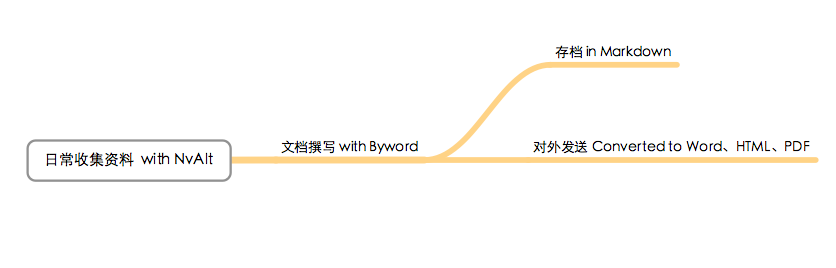

Your browser doesn't support the features required by impress.js, so you are presented with a simplified version of this presentation.
For the best experience please use the latest Chrome, Safari or Firefox browser. Upcoming version 10 of Internet Explorer should also handle it.
Into Markdown
------ An introduction
The idea is that a Markdown-formatted document should be publishable as-is, as plain text, without looking like it’s been marked up with tags or formatting instructions.
--- John Gruber

Markdown的优点
- 通用性：基于纯文本的轻量标记语言，不受平台、编辑器的限制，很多CMS内置对Markdown的支持
- 易读 / 写性：文档可像普通文章一样阅读 / 书写，不像HTML一样有众多标记的干扰
- 灵活性：
- 可以像HTML那样为文字添加层级和样式
- 可与HTML代码混合使用
- 可方便的转换为HTML、PDF、RTF、Word，甚至是LaTeX
## Markdown实例
基于纯文本的轻量[标记语言][1]
[1]: http://daringfireball.com
> Quote
### 优点
* 通用
* 易读 / 写
* 灵活：
* 可为文本添加层级、样式
* 可与HTML代码混合使用
* 方便的转换为多种格式
Mardown基础语法
文本样式：
*斜体* **粗体**
_斜体_ __粗体__
引用：
> 引用使用'>'符号来标记
>> 可嵌套。
> 引用内部可以添加*文本样式*
标题元素有两种写法：
风格一：
H1
========
H2
--------
风格二：
# h1 #
## h2 ##
...
###### h6 ######
列表：
顺序列表：
1. 第一项
2. 第二项
无序列表：
* 第一项
* 第二项
列表可嵌套，列表的每个项目可有多个段落
其他
1. 两段间插入空行
为两段添加<p>标签
2. "`"符号为<code>标签
一个Tab或四个空格为<pre>标签
3. --- *** 为水平分割线<hr />
4. 在一行文字的最后打两个以上的空格符之后
回车换行将添加<br />标签
Markdown 编辑器：
纯文本 = 任何文本编辑器
几乎所有的代码编辑器都包括了对Markdown语法的高亮功能。
有一些文档编辑器专门为Markdown优化，能够为Markdown编辑提供更多的便利功能。
推荐产品：
Byword（Mac）
Mou（Mac）
Elements （iOS）
Writemonkey （Windows)
ReText （Linux）
Dillinger（Chrome）
- ...欢迎补充推荐
My Workflow：

No MS Word Anymore（or Pages）